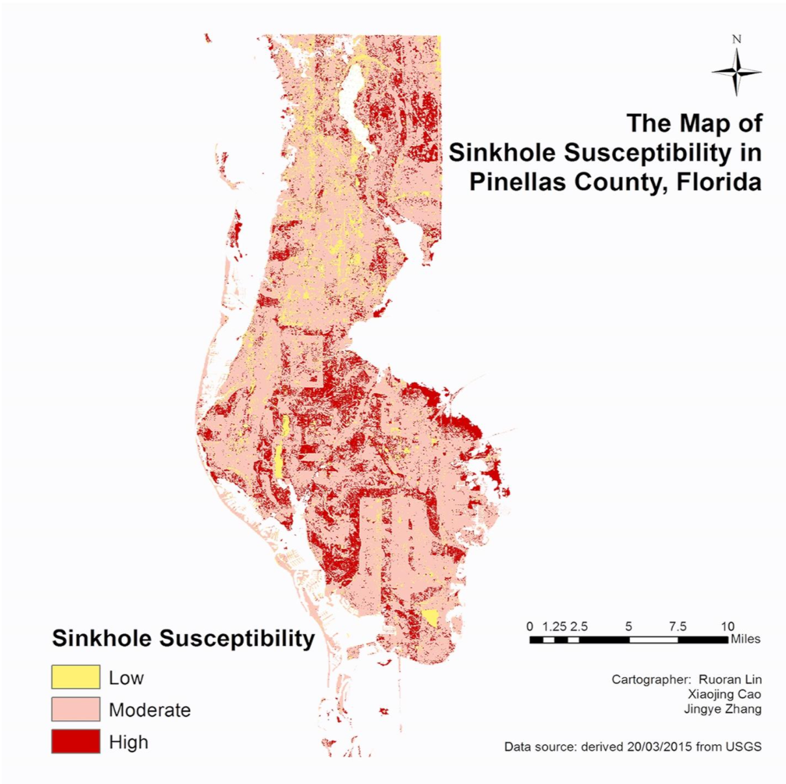

The aims of the study are to develop a model for sinkholes prediction and produce a sinkholes susceptibility map at Pinellas County, using remote sensing (RS) and geographical information system (GIS) techniques. Nine sinkhole-related factors, including water containment, vegetation cover, land cover, slope, aspect, elevation, distance to the previous sinkholes, and distance to the primary roads, were chosen to be the independent variables for sinkholes prediction. Nine corresponding maps were produced based on the Landsat TM5 images, LiDAR cloud data and in situ measurement maps. To achieve a reliable predictive model, the factors maps were imported into the SPSS to conduct the logistic regression (LR) analysis. The final sinkholes susceptibility map was derived through the weighted overlay analysis according to LR equation and Frequency ratio (FR).
The overall accuracy of the LR prediction model for training and testing sinkholes occurrence data is 76.3% and 62.5%, respectively. The result from LR analysis the effect of NDVI is the most important factor with coefficient value (-1.118), followed by NDWI (0.889), and then slope (-0.873). For sinkholes susceptibility map, 40 out of 66 sinkholes recorded in the in-situ measurement fall into the areas with high susceptibility on the map, and 13 in-situ measured sinkholes are located at the areas with moderate susceptibility. Therefore, the overall accuracy for the prediction map is as high as 85.48%, which indicating sinkholes susceptibility map perform well in predicting the occurrences of sinkholes.